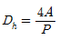
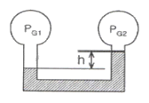
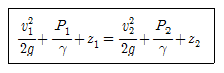
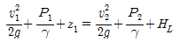
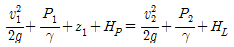
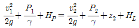
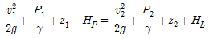
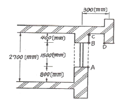
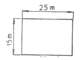

1과목: 소방원론
1. NH4H2PO4 를 주성분으로 한 분말소화약제는 제 몇 종 분말소화약제인가?
2. 다음 중 가연성 물질에 해당하는 것은?
3. 화재하중의 단위로 옳은 것은?
4. 일반적으로 공기 중 산소농도를 몇 vol% 이하로 감소시키면 연소상태의 중지 및 질식소화가 가능하겠는가?
5. 다음 중 소화약제로 사용할 수 없는 것은?
6. 주된 연소의 형태가 표면연소에 해당하는 물질이 아닌 것은?
7. 위험물안전관리법령에 따른 위험물의 유별 분류가 나머지 셋과 다른 것은?
8. 화재시 발생하는 연소가스에 대한 설명으로 가장 옳은 것은?
9. 피난계획의 일반원칙 중 fool proof 원칙에 해당하는 것은?
10. 다음 중 증발잠열(kJ/kg)이 가장 큰 것은?
11. 경유화재가 발생했을 때 주수소화가 오히려 위험할 수 있는 이유는?
12. Halon 1301 의 분자식에 해당하는 것은?
13. "FM200"이라는 상품명을 가지며 오존파괴지수(ODP)가 0 인 할론 대체 소화약제는 어느 계열인가?
14. 열의 전달현상 중 복사현상과 가장 관계 깊은 것은?
15. 다음 중 할로겐화합물 소화약제의 가장 주된 소화효과에 해당하는 것은?
16. 실내화재에서 화재의 최성기에 돌입하기 전에 다량의 가연성 가스가 동시에 연소되면서 급격한 온도상승을 유발하는 현상은?
17. 보일오버(Boil over) 현상에 대한 설명으로 옳은 것은?
18. 탄산가스에 대한 일반적인 설명으로 옳은 것은?
19. 인화점이 낮은 것부터 높은 순서로 옳게 나열된 것은?
20. 점화원이 될 수 없는 것은?
2과목: 소방유체역학
21. 지름이 5cm인 원형 관 내에 어떤 이상기체가 흐르고 있다. 다음 중 이 기체의 흐름이 층류이면서 가장 빠른 속도는? (단, 이 기체의 절대압력은 200kPa, 온도는 27℃, 기체상수는 2080J/kgㆍK, 점성계수는 2×10-5Nㆍs/m2, 층류에서 하임계 레이놀즈 값은 2200으로 한다.)
22. 어떤 밀폐계가 압력 200kPa, 체적 0.1m3인 상태에서 100kPa, 0.3m3인 상태까지 가역적으로 팽창하였다. 이 과정의 P-V선도가 직선으로 표시된다면 이 과정 동안에 계가 한 일은 몇 kJ인가?
23. 직경이 18mm인 노즐을 사용하여 노즐 압력 147kPa로 옥내 소화전을 방수하면 방수속도는 약 몇 m/s인가?
24. 한 변의 길이가 L인 정사각형 단면의 수력직경(Dh)은? (단, P는 유체의 젖은 단면 둘레의 길이, A는 관의 단면적이며,

로 정의한다.)25. 그림과 같이 두 기체통에 수은 액주계(마노미터)를 연결하였을 때, 높이차(h)가 20cm이었다. 두 기체통의 압력차이는 몇 Pa인가? (단, 채워진 기체의 밀도는 수은에 비해 매우 작고, 수은의 비중량은 133kN/m3이다.)

26. 압축비 3인 2단 펌프의 토출압력이 2.7MPa이다. 이 펌프의 흡입압력은 몇 kPa인가?
27. 유체에 작용하는 힘과 운동량방정식에 관한 설명으로 옳지 않은 것은?
28. 호주에서 무게가 20N 인 어떤 물체를 한국에서 재어보니 19.8N 이었다면 한국에서의 중력가속도는 약 몇 m/s2인가? (단, 호주에서의 중력가속도는 9.82m/s2이다.)
29. 지름이 0.3m인 구형 풍선 안에 25℃, 150kPa 상태의 이상기체가 들어있다. 풍선을 가열하여 풍선의 지름이 0.4m로 부풀었다면 이 기체의 최종 온도는 얼마인가? (단, 이 기체의 압력은 풍선의 지름에 정비례한다.)
30. 물 속 같은 깊이에 수평으로 잠겨있는 원형 평판의 지름과 정사각형 평판의 한변의 길이가 같을 때 두 평판의 한쪽면이 받는 정수력학적 힘의 비는?
31. 유체의 흐름에서 다음의 베르누이 방정식이 성립하기 위한 조건을 설명한 것으로 옳지 않은 것은?

32. 물의 온도에 상응하는 증기압보다 낮은 부분이 발생하면 물은 증발되고 물 속에 있던 공기와 물이 분리되어 기포가 발생하는 펌프의 현상은?
33. 기업계에 나타난 압력이 740mmHg인 곳에서 어떤 용기 속의 계기압력이 600kPa이었다면 절대압력으로는 몇 kPa인가?
34. 펌프의 일과 손실을 고려할 때 베르누이 수정방식을 바르게 나타낸 것은? (단, HP와 HL은 펌프의 수두와 손실 수두를 나타내며, 하첨자 1, 2는 각각 펌프의 전후 위치를 나타낸다.)




35. 밸브가 달린 견고한 밀폐용기 안에 온도 300K, 압력 500kPa의 기체 4kg이 들어 있다. 밸브를 열어 기체 1kg을 대기로 방출한 후 밸브를 닫고 주위온도가 300K로 일정한 분위기에서 용기를 장시간 방치하였다. 내부기체의 최종압력은 약 몇 kPa인가? (단, 이 기체는 이상기체로 간주한다.)
36. 공기 중에서 무게가 941N 인 돌의 무게가 물 속에서 500N 이면 이 돌의 체적은 몇 m3인가? (단, 공기의 부력은 무시한다.)
37. 점성계수가 0.08kg/mㆍs이고 밀도가 800kg/m3인 유체의 동점성계수는 몇 cm2/s 인가?
38. 지름이 일정한 관내의 점성 유동장에 관한 일반적인 설명으로 옳은 것은?
39. 지름 5cm인 구가 대류에 의해 열을 외부공기로 방출한다. 이 구는 50W의 전기히터에 의해 내부에서 가열되고 있고 구 표면과 공기 사이의 온도차가 30℃라면 공기와 구 사이의 대류 열전달계수는 약 몇 W/(m2ㆍ℃)인가?
40. 굴뚝에서 나온 연기 형상을 촬영하였다면 이 형상은 다음 중 무엇에 가장 가까운가?
3과목: 소방관계법규
41. 소방시설업의 지위를 승계한 자는 그 지위를 승계한 날부터 30일 이내에 상속인, 영업을 양수한 자와 시설의 전부를 인수한 자의 경우에는 소방시설업 지위승계신고서에, 합병 후 존속하는 법인 또는 합병에 의하여 설립되는 법인의 경우에는 소방시설업 합병신고서에 서류를 첨부하여 시·도지사에게 제출하여야 한다. 제출서류에 포함하지 않아도 되는 것은?
42. 공동 소방안전관리자를 선임하여야 하는 특정소방대상물의 기준으로 옳지 않은 것은?
43. 위험물운송자 자격을 취득하지 아니한 자가 위험물 이동 탱크저장소 운전 시의 벌칙으로 옳은 것은?(관련 규정 개정전 문제로 여기서는 기존 정답인 4번을 누르면 정답 처리됩니다. 자세한 내용은 해설을 참고하세요.)
44. 국가는 소방업무에 필요한 경비의 일부를 국고에서 보조한다. 국고보조 대상 소화활동장비 및 설비로서 옳지 않은 것은?
45. 소방시설공사가 설계도서나 화재안전기준에 맞지 아니 할 경우 감리업자가 가장 우선하여 조치하여야 할 사항은?
46. 자동화재 탐지설비를 화재안전기준에 적합하게 설치한 경우에 그 설비의 유효범위 내에서 설치가 면제되는 소방시설로서 옳은 것은?
47. 소방공사 감리원 배치 시, 배치일로부터 며칠 이내에 관련서류를 첨부하여 소방본부장 또는 소방서장에게 알려야 하는가?
48. 소방방재청장은 방염대상물품의 방염성능검사 업무를 어디에 위탁 할 수 있는가?
49. 소방기본법에 규정된 화재조사에 대한 내용이다. 틀린 것은?
50. 특수가연물의 저장 및 취급의 기준으로서 옳지 않은 것은?
51. 제조소 중 위험물을 취급하는 건축물은 특수한 경우를 제외하고 어떤 구조로 하여야 하는가?
52. 아파트로서 층수가 몇 층 이상인 것은 모든 층에 스프링클러를 설치하여야 하는가?(관련 규정 개정전 문제로 여기서는 기존 정답인 2번을 누르면 정답 처리됩니다. 자세한 내용은 해설을 참고하세요.)
53. 건축물 등의 신축·증축 동의요구를 소재시 관할 소방본부장 또는 소방서장에게 한 경우 소방본부장 또는 소방서장은 건축허가 등의 동의요구서류를 접수한 날부터 며칠 이내에 건축허가 등의 동의여부를 회신하여야 하는가? (단, 허가 신청한 건축물이 연면적이 20만 m2이상의 특정소방대상물인 경우이다.)
54. 소방시설의 하자가 발생한 경우 통보를 받은 공사업자는 며칠 이내에 이를 보수하거나 보수 일정을 기록한 하자보수 계획을 관계인에게 서면으로 알려야 하는가?
55. 다음 위험물 중 자기반응성 물질은 어느 것인가?
56. 소방특별조사에 관한 설명이다. 틀린 것은?
57. 소방본부장 또는 소방서장은 함부로 버려두거나 그냥 둔 위험물 또는 물건을 옮겨 보관하는 경우 소방본부 또는 소방서 게시판에 보관한 날부터 며칠 동안 공고하여야 하는가?
58. 방염업을 운영하는 방염업자가 규정을 위반하여 다른 사람에게 등록증 또는 등록수첩을 빌려준 때 받게 되는 행정처분기준으로 옳은 것은?
59. 다음 특정소방대상물에 대한 설명으로 옳은 것은?
60. 다음 중 특수가연물에 해당되지 않는 것은?
4과목: 소방기계시설의 구조 및 원리
61. 그림과 같은 소방대상물의 부분에 완강기를 설치할 경우 부착 금속구의 부착위치로서 가장 적합한 곳은 다음 중 어느 위치인가?

62. 지하구의 길이가 1000m인 경우, 연소방지설비의 살수구역은 최소 몇 개로 하여야 하며, 하나의 살수구역의 길이는 몇 m이상으로 해야 하는가?
63. 상수도소화용수설비의 설치기준 설명으로 맞지 않은 것은?
64. 스프링클러 소화설비에 설치하는 스트레이너에 대한 설명이다. 옳지 않은 것은?
65. 분말소화설비의 저장용기 내부압력이 설정압력이 될 때 주밸브를 개방하는 것은?
66. 물분무 소화설비가 적용되지 않는 위험물은 어느 것인가?
67. 평면도와 같이 반자가 있는 어느 실내에 전등이나 공조용 디퓨져 등의 시설물에 구애됨이 없이 수평거리를 2.1m로 하여 스프링클러헤드를 정방형으로 설치하고자 할 때 최소한 몇 개의 헤드를 설치하면 될 것인가? (단, 반자속에는 헤드를 설치하지 아니한느 것으로 한다.)

68. 포소화설비에 대한 다음 설명 중 맞는 것은?
69. 난방설비가 없는 교육장소(겨울 최저온도 : -15℃)에 비치하는 소화기로 적합한 것은?
70. 예상제연구역 바닥면적 400m2미만 거실의 공기유입구와 배출구간의 직선거리로써 맞는 것은? (단, 제연경계에 의한 구획을 제외한다.)
71. 바닥면적이 1300m2인 판매시설에 소화기구를 설치하려 한다. 소화기구의 최소 능력 단위는? (단, 주요구조부는 내화구조이고, 벽 및 반자의 실내와 면하는 부분이 불연재료이다.)
72. 이산화탄소소화설비의 화재안전기준상 이산화탄소 소화설비의 배관설치 기준으로 적합하지 않은 것은?
73. 연결살수설비의 화재안전기준상 연결살수설비전용헤드를 사용하는 경우 하나의 배관에 부착하는 살수헤드의 개수가 3개일 때, 배관의 구경은 몇 mm 이상이어야 하는가?
74. 다음의 소방대상물 중 스프링클러소화설비가 적용되는 곳은?
75. 이산화탄소 소화설비의 저장용기 개방밸브에 대해서 옳지 않은 것은?
76. 옥내 소화전설비의 화재안전기준에 관한 설명 중 틀린 것은?
77. 전역방출방식 분말 소화설비에서 방호구역의 개구부에 자동폐쇄장치를 설치하지 아니한 경우에 개구부의 면적 1제곱미터에 대한 분말소화약제의 가산량으로 잘못 연결된 것은?
78. 포소화설비에서 수성막포(A.F.F.F) 소화약제를 사용할 경우 약제에 대한 설명 중 잘못된 것은?
79. 물분무 소화설비에서 소화효과는 무엇인가?
80. 사강식 구조대 점검사항 중 틀린 사항은 어느 것인가?